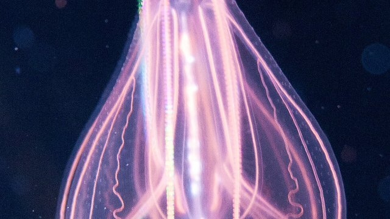

物理5–11 岁约 10 分钟
方伞四角垂须才游得准去扎，圆伞乱漂就扎不准？
同一只纸箱水母。方伞四角垂须才游得准去扎；圆伞乱漂就扎不准。它的伞盖方方的像只小箱子，四个角各垂一束触手，伞的四面还各有一组像小眼睛的感觉器帮它看路；收一下伞推一股水，能拐弯、能挑路，游到猎物跟前触手才扎得上；圆伞只会随水漂，漂到哪算哪。不要碰真的，有毒。
同一只纸箱水母，方伞一回，圆伞乱漂一回

方伞四角垂须才游得准去扎。圆伞乱漂就扎不准。先点「方伞」，再点「试一试」。
先猜一猜，再试
第 1 题：调到 80，方伞四角垂须，游得准去扎吗？
押一个。把滑条调到 80，再点试一试。
第 2 题：调到 10，圆伞乱漂，还游得准去扎吗？
押好后滑条 10，再试一试。
第 3 题：调到 50，刚好一半，算游得准去扎了吗？
押好后滑条 50，再试一试。
同一只纸箱水母：方伞四角垂须才游得准去扎；圆伞乱漂就扎不准
先点「方伞」再点「试一试」，看游得准去扎。再点「圆伞」试一次，看是不是扎不准。
纸箱水母始终是同一只。要紧的是伞方不方：方伞收一下推一股水，四面的小眼睛帮着挑路，游到猎物跟前，四角垂下的触手才扎得上；一换成圆伞乱漂，漂到哪算哪，就扎不准。栉水母靠栉板划水、没有刺胞——另开，不比。
舞台上的读数是本页比较尺子：滑条 ≥ 80 才算游得准去扎。刚好 50 还不够。不要碰真的，有毒。本页用纸板。
方伞图鉴
点一张，对照舞台：谁让方伞四角垂须才游得准去扎，谁让圆伞乱漂就扎不准。
点一张图鉴，对照为什么方伞四角垂须才游得准去扎。
猜一猜
同一只纸箱水母要游得准去扎，靠的是方伞，还是圆伞乱漂？
先押一个，再点「看答案」。
任务：方伞和圆伞乱漂都试
先把滑条调到 80 或更高试一次，再调到 20 或更低试一次。两头都点过「试一试」即可完成。
开放式提示不会代替上面的正式任务。
尚未完成：先方伞试一次，或圆伞乱漂试一次。
同一只纸箱水母，先方伞试一次，再对照试一次
舞台上只改一件事：方伞四角垂须有多够。同一只纸箱水母，先方伞试一次，看游得准不准；再圆伞试一次，看是不是扎不准。这样比，才知道扎得上靠的是方伞自己游到跟前，不是「乱漂也一样」，也不是「换成栉水母划栉」。
回家只带两句：「方伞四角垂须才游得准去扎」；「圆伞乱漂就扎不准」。不要写成「伞越大越好」。
方伞收一下推一股水，游到跟前，四角的触手才扎得上。
圆伞只会随水漂，凑不到跟前，就扎不准。
栉水母划栉另开；本页比伞方不方，两句不要并成一句。
不要碰真的，有毒。本页用纸板对照。
这在教什么：孩子要能对方伞和圆伞乱漂各报成不成，并否定「栉水母划栉」和「换一套就一样」。
- 方伞那一次，身子游得准去扎了吗？
- 圆伞乱漂，台上还游得准去扎吗？
- 本页要比栉水母划栉吗？
- 能去碰真的箱水母吗？
进去靠方伞四角垂须，不是栉水母划栉，更不要碰真的
箱水母的伞盖方方的像只小箱子，四角各垂一束触手，四面各有一组像小眼睛的感觉器；收一下伞推一股水，能拐弯、能挑路，一路游到猎物跟前，触手上排满的刺胞才扎得上；圆伞乱漂，漂到哪算哪，就扎不准。
不要把它讲成「伞越大越好」或「换成别的水母就能成」。栉水母靠栉板划水、没有刺胞，普通圆伞只会随波漂，都是另外的账；箱水母先比方伞游得准不准。
不追真的。看完按二十秒洗手。本页用纸板。
给家长的问题
- 方伞那一次，孩子指的是这一招，还是在说「它比较猛」？让他再指一次做对的那一下。
- 圆伞乱漂，为什么扎不准？哪一句四岁听得懂？
- 如果他说「栉水母划栉就能进」——栉水母划栉是哪一笔账？本页少的是方伞还是栉水母划栉？
- 栉水母划栉和箱水母方伞，差在「点一下」还是「方伞四角垂须」？
- 不要碰真的，有毒：红线怎么说？本页能当抓水母课吗？
背后的原理
舞台上不写这些词，留给孩子用眼睛看。箱水母（Cubozoa）伞是方的、四角垂须，才游得准去扎。圆伞乱漂就扎不准。不是栉水母那种划栉。不要碰真的，有毒。本页用方伞 ≥ 80 当门槛，≤ 20 算圆伞乱漂。刚好 50 不算。
这不是栉水母划栉说明书，也不是普通圆伞。栉水母划栉另开，都不要并进本页第一完成句。
人去追活箱水母会让它受惊。观察后洗手。舞台用纸板。
接下来可以去
带走句：方伞四角垂须才游得准去扎；圆伞乱漂就扎不准。箱水母观察站看真方伞。